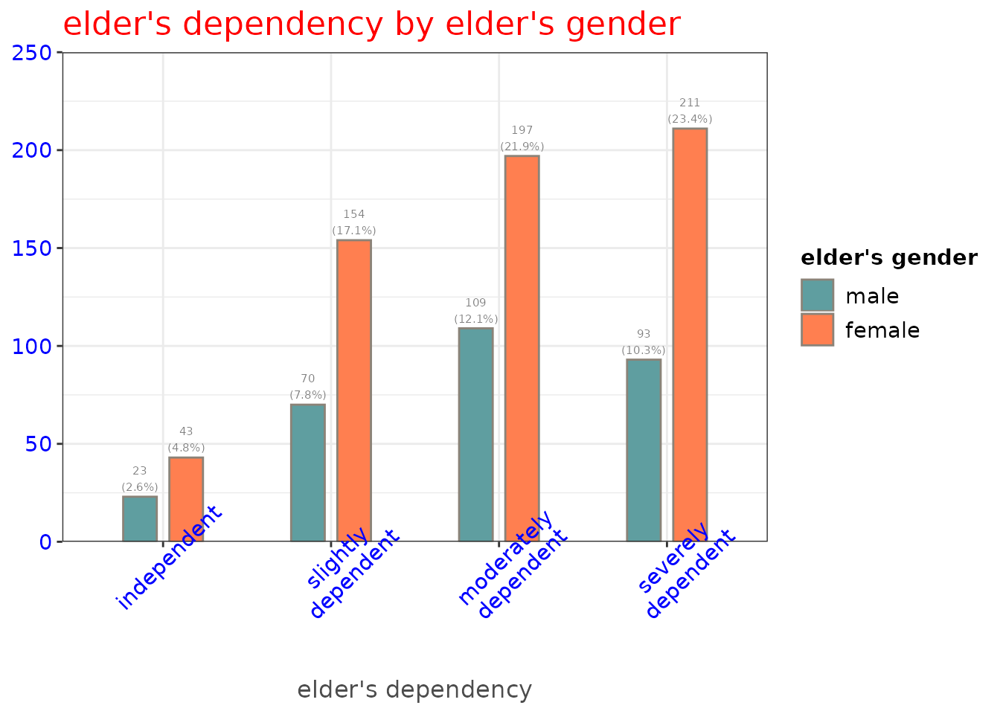
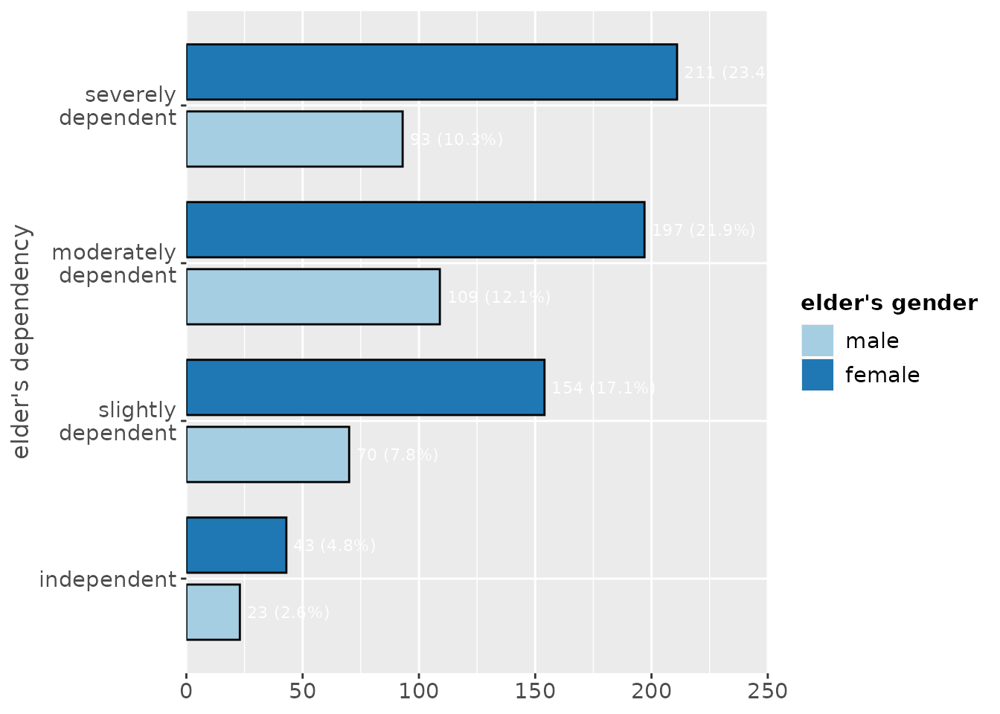
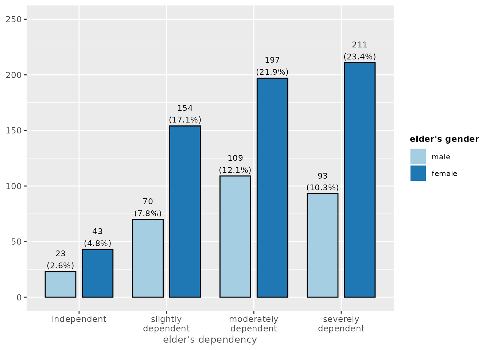
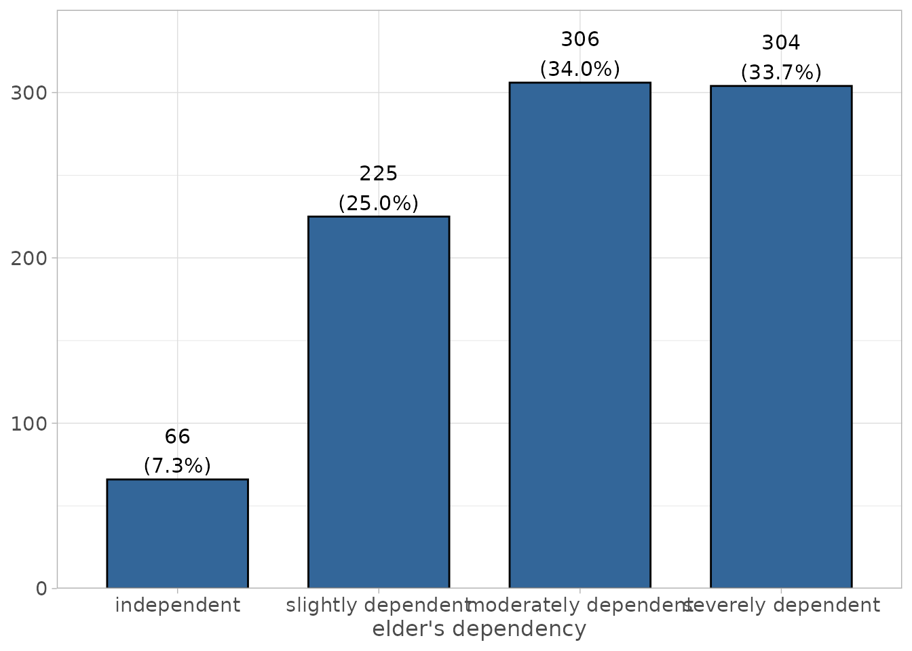
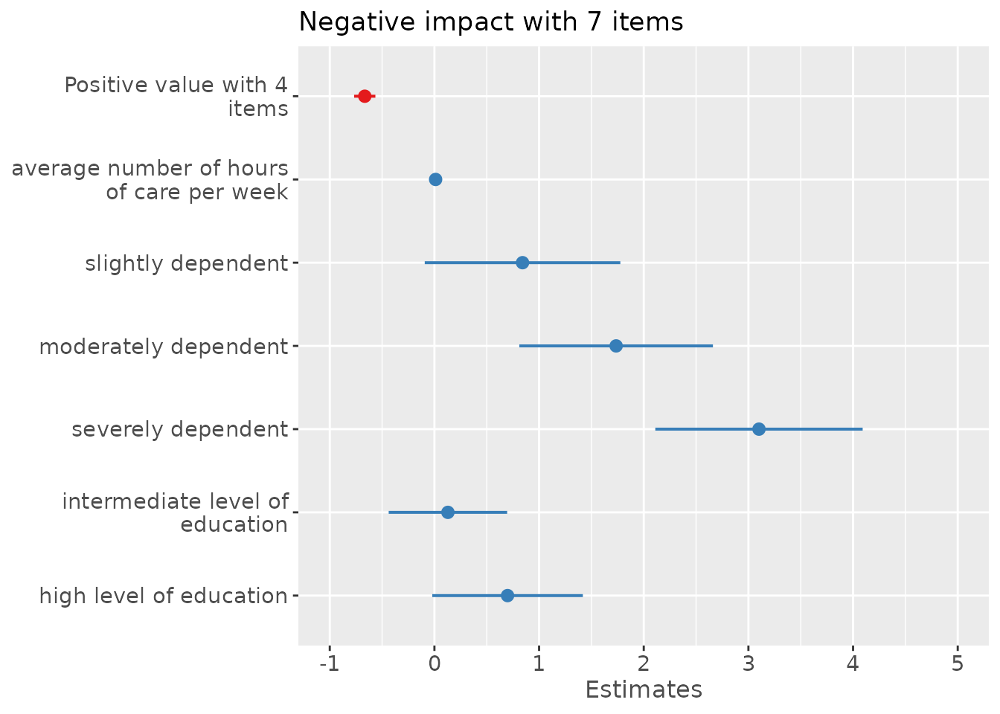
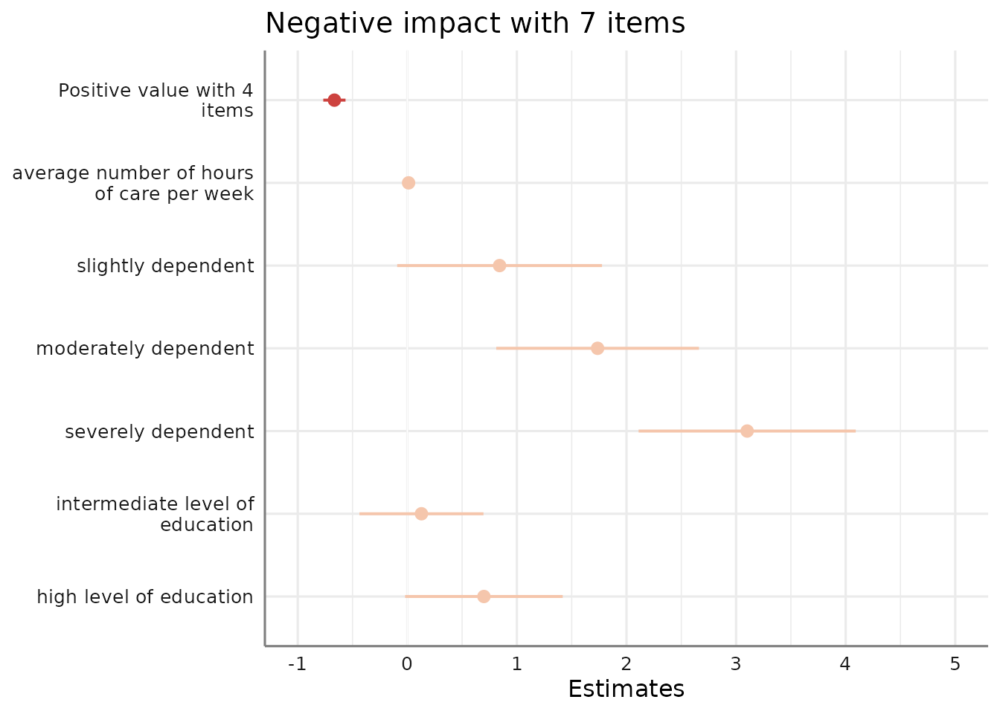

This vignette shows how the plots created by the sjp.*
and plot_model() functions of the sjPlot
package can be customized.
The examples refer to plot_grpfrq(), but most arguments
are similar across all plotting function of the sjPlot
package.
Tweaking plot appearance
The base function to globally change theme option for all
sjp-function is set_theme(). Except for geom-colors and
geom-sizes, all theme-options can be set via this function. This new
theme will be applied to all following plots created with the
sjPlot package.
There are various arguments to change colors, sizes, angles etc. of labels. Following example show changes to colors, sizes, angles, geom-outlines and theme.
# load libraries
library(sjPlot) # for plotting
library(sjmisc) # for sample data
library(ggplot2) # to access ggplot-themes
# load sample data set
data(efc)
set_theme(
geom.outline.color = "antiquewhite4",
geom.outline.size = 1,
geom.label.size = 2,
geom.label.color = "grey50",
title.color = "red",
title.size = 1.5,
axis.angle.x = 45,
axis.textcolor = "blue",
base = theme_bw()
)
plot_grpfrq(
efc$e42dep,
efc$e16sex,
title = NULL,
geom.colors = c("cadetblue", "coral"),
geom.size = 0.4
)
Using the Color Brewer palettes
All plotting functions support the usage of the Colorbrewer palettes. To apply a
color brewer palette, use specify the palette as
geom.colors. Any valid color brewer palette is recognized
automatically.
# blank theme
set_theme(
base = theme_blank(),
axis.title.size = .9,
axis.textsize = .9,
legend.size = .7,
legend.title.size = .8,
geom.label.size = 3
)
plot_grpfrq(
efc$e42dep,
efc$e15relat,
geom.colors = "PuRd",
show.values = FALSE
)An overview of all supported color codes can be obtained with
display.brewer.all() from the RColorBrewer
package.
library(RColorBrewer)
display.brewer.all()Plot with flipped coordinates
The plot’s axes can be flipped using coord.flip = TRUE.
If needed, labels can be placed inside the bars with the
vjust or hjust arguments. In such cases, you
might need to adjust the label colors with
geom.label.color = "white".
set_theme(geom.label.color = "white", geom.label.size = 3)
# labels appear very large due to export metrics
plot_grpfrq(efc$e42dep, efc$e16sex, coord.flip = TRUE)
Adding plot margins
Plots with no margins towards the axes may look strange to some
people (not to me, though). To restore the ggplot-default behaviour, use
the expand.grid argument:
plot_grpfrq(efc$e42dep, efc$e16sex, expand.grid = TRUE)
Theme options
You can use any pre-defined theme from ggplot, like
theme_bw(), theme_classic() or
theme_minimal() as default theme.
set_theme(base = theme_light())
plot_frq(efc$e42dep)
Pre-defined themes
There is a set of pre-defined themes from the sjPlot-package. See
?"sjPlot-themes" for a complete list.
library(sjmisc)
data(efc)
efc <- to_factor(efc, e42dep, c172code)
m <- lm(neg_c_7 ~ pos_v_4 + c12hour + e42dep + c172code, data = efc)
# reset theme
set_theme(base = theme_grey())
# forest plot of regression model
p <- plot_model(m)
# default theme
p
# pre-defined theme
p + theme_sjplot()
Pre-defined scales
There is also a new scale for ggplot-objects,
scale_color_sjplot() and
scale_fill_sjplot().
p +
theme_sjplot2() +
scale_color_sjplot("simply")
To see all currently available color sets, use
show_sjplot_pals().
Set up own themes based on existing themes
If you want to use a specific theme as base for building your own
theme, use the base argument. When using base
instead of theme, further arguments for settings colors
etc. are not ignored.
Further customization options
Each plotting function invisibly returns the ggplot-object. You can further add options to customize the appearance of the plot, like in the following example, where the count axis is hidden (color set to white):
set_theme(
base = theme_classic(),
axis.tickslen = 0, # hides tick marks
axis.title.size = .9,
axis.textsize = .9,
legend.size = .7,
legend.title.size = .8,
geom.label.size = 3.5
)
plot_grpfrq(
efc$e42dep,
efc$e16sex,
coord.flip = TRUE,
show.axis.values = FALSE
) +
theme(axis.line.x = element_line(color = "white"))Plot legend
The plot’s legend can be customized via various
legend.-arguments, see following examples:
set_theme(
base = theme_classic(),
legend.title.face = "italic", # title font face
legend.inside = TRUE, # legend inside plot
legend.color = "grey50", # legend label color
legend.pos = "bottom right", # legend position inside plot
axis.title.size = .9,
axis.textsize = .9,
legend.size = .7,
legend.title.size = .8,
geom.label.size = 3
)
plot_grpfrq(efc$e42dep, efc$e16sex, coord.flip = TRUE)
set_theme(
base = theme_classic(),
axis.linecolor = "white", # "remove" axis lines
axis.textcolor.y = "darkred", # set axis label text only for y axis
axis.tickslen = 0, # "remove" tick marks
legend.title.color = "red", # legend title color
legend.title.size = 2, # legend title size
legend.color = "green", # legend label color
legend.pos = "top", # legend position above plot
axis.title.size = .9,
axis.textsize = .9,
legend.size = .7,
geom.label.size = 3
)
plot_grpfrq(efc$e42dep, efc$e16sex)